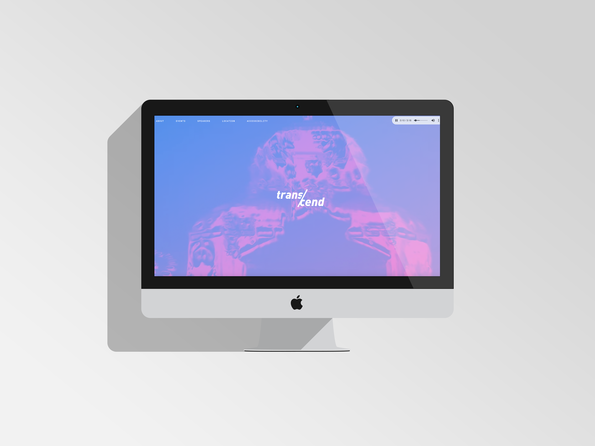
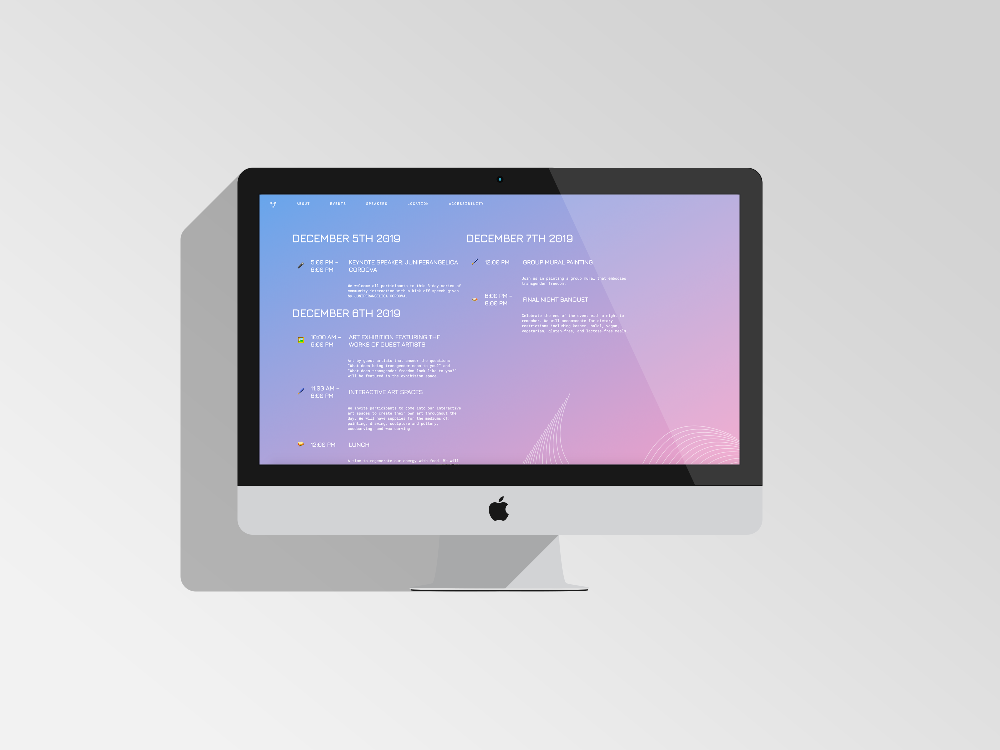
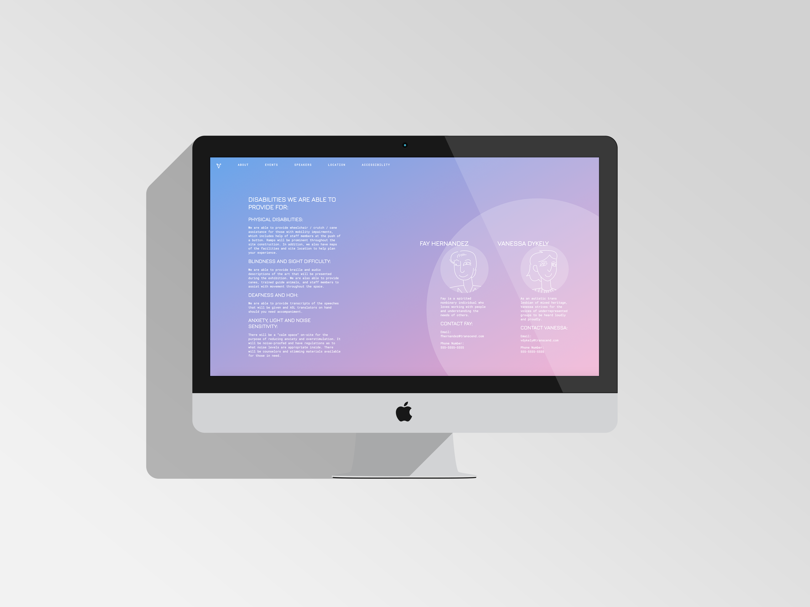
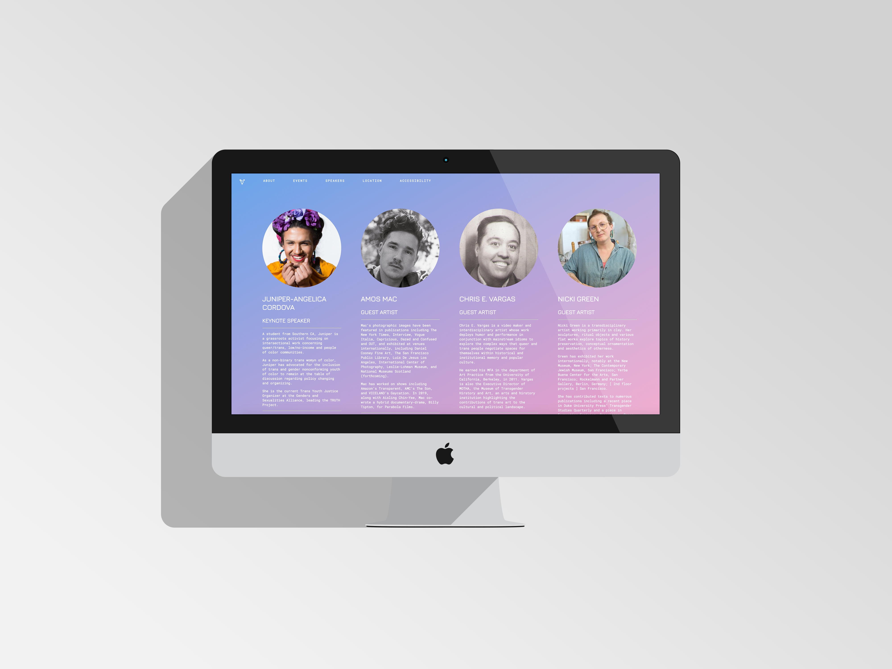
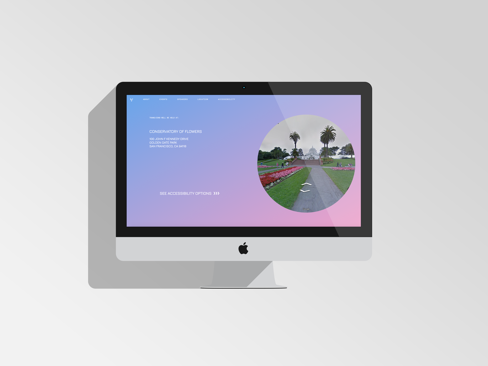
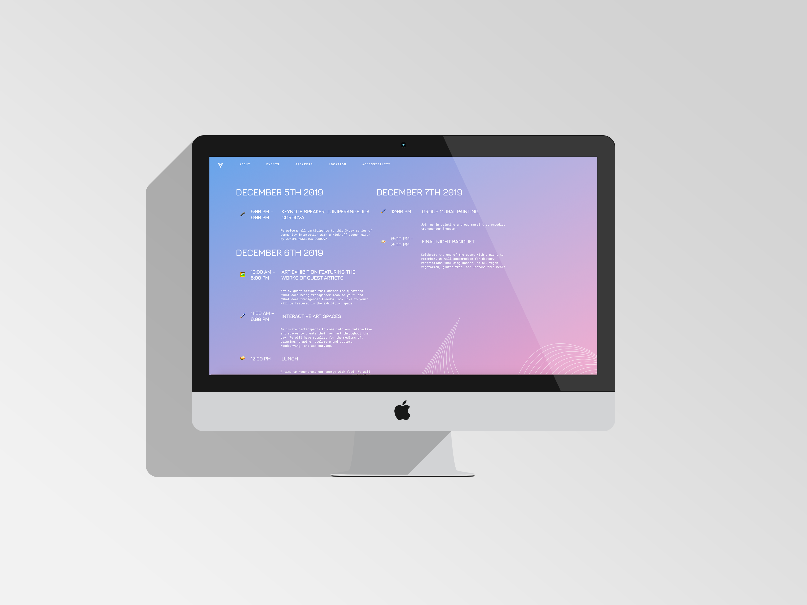
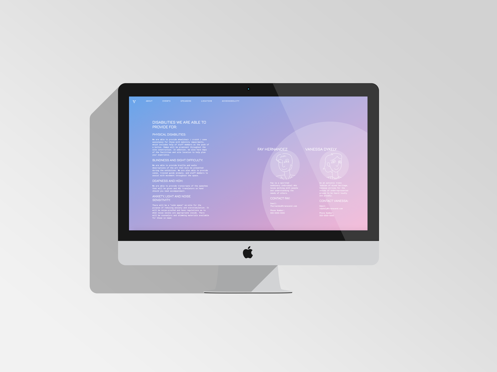
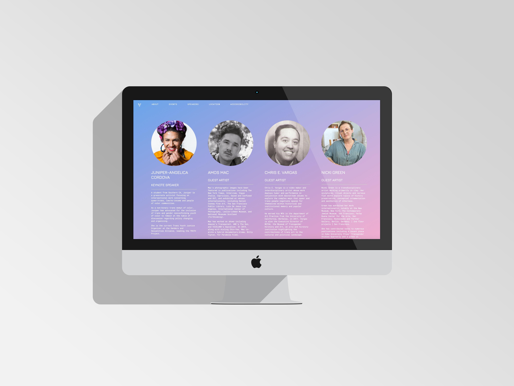
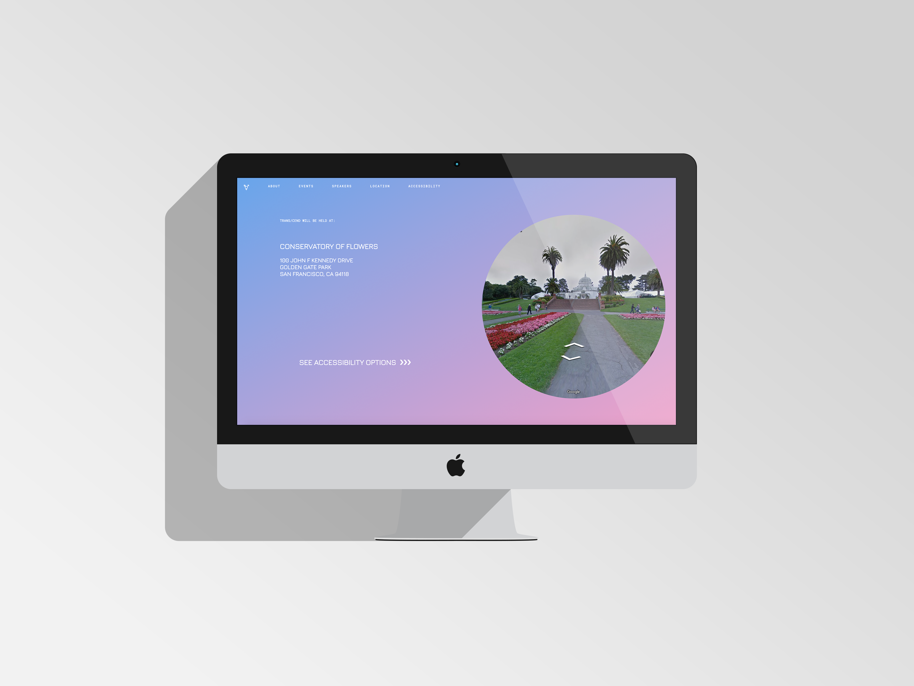

This project involved designing a style guide, website, and piece of ephemera for a fictional festival or conference.
TRANS/CEND is a collaborative event for creative minds, the unorthodox, and the edge of tomorrow being discovered by transgender individuals. It is the bonding of artistic minds from around the globe to address the progress and challenges that the transgender community stands at the precipice of.

 






